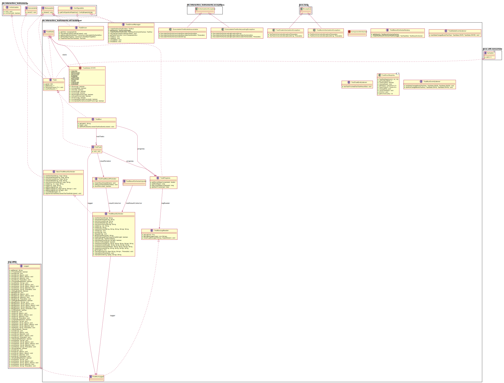

See: Description
| Interface | Description |
|---|---|
| BasicTestResultCollector |
Basic Test Result Collector interface
|
| Task<T> |
Task interface which is implemented by
Runnable objects
Task objects are managed by the TaskPoolRegistry |
| TaskProgress | |
| TaskState |
OK
|
| TaskStateEventListener |
A Listener interface for realising the Observer pattern.
|
| TestDriver |
Test Driver
Encapsulates a test engine, manages test engine specific Executable Test Suites and defines the main entry point for executing Test Suites against an Test Object.
|
| TestDriverManager | |
| TestResultCollector |
The TestResultCollector is used to report failures and messages during a test run as well as adding information about the control flow, attachments and logging messages (info, debug, error) which are written to a log path and linked from the test task result.
|
| TestResultCollectorFactory | |
| TestResultCollectorInjector | |
| TestRun |
Test Run
A Test Run bundles multiple Test Tasks (@see TestTask).
|
| TestRunEventListener |
Test Run event listener
A Listener interface for realising the Observer pattern.
|
| TestRunLogger |
Logger used by TestDrivers
|
| TestRunLogReader |
Log path read interface
|
| TestTask |
A task intended for tests.
|
| TestTaskEndListener |
Fired when a ResultListener finishes a Test Task.
|
| TestTaskResultPersistor |
The TestTaskResultPersistor provides a abstract layer for persisting the results of a Test Task.
|
| Class | Description |
|---|---|
| TaskPoolRegistry<R,T extends Task<R>> |
A client can call the pool and create a new task which implements the TaskProgressInterface.
|
| Enum | Description |
|---|---|
| TaskState.STATE |
| Exception | Description |
|---|---|
| ExecutableTestSuiteLoadingException | |
| ExecutableTestSuiteUnavailable | |
| TestRunInitializationException | |
| TestTaskInitializationException |
| Annotation Type | Description |
|---|---|
| ComponentInitializer |
Entry point annotation for the ETF class loader
|
Classes for controlling Test Runs
